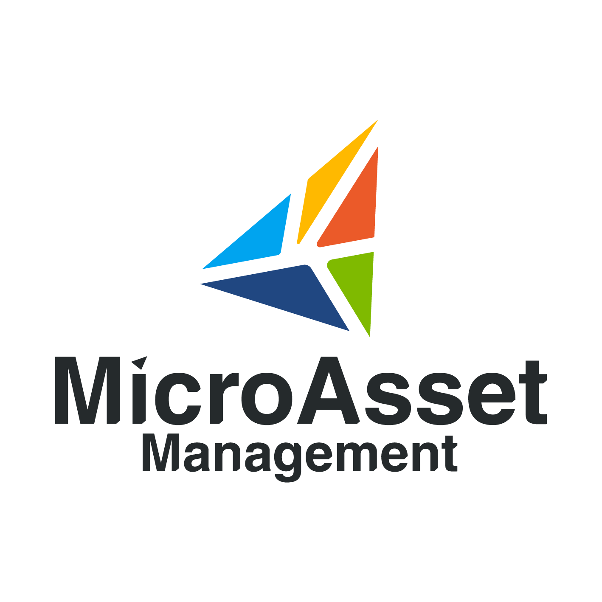

FIVE EXPERTISE. ONE TEAM.
地域の建設会社に、経営の力を。

01 THE CHALLENGE
建設会社の経営には、
施工以外にも、
多くの仕事があります。
現場に向き合いたい。
でも、経営の仕事は待ってくれない。
資金繰り、採用、契約、日々の原価管理。
経営者だけで抱え込んでいる業務はありませんか。
その課題を、ともに動かすチームがいます。
02 OUR CONCEPT
経営の相談窓口を、
一つに。
経営に必要な機能を、
一つのチームに。
MicroAsset Managementは、中小建設会社のための
経営統合プラットフォームです。
社内にすべての専門家を抱えるのではなく、
社外に経営チームを持つ。
必要な専門性をつなぎ、日々の経営実務まで支えます。
04 OUR SERVICES
現場に集中できる、
経営の基盤を。
日々の実務から、次の成長に向けた仕組みづくりまで。
貴社の課題に合わせて、必要な機能を組み合わせます。
01 / MANAGEMENT経営管理BPO
経営の状況を見える化し、
日々の管理業務を支える。
支援内容を見る ＋
日々の管理業務を支える。
経営数値の整理、原価・収支の管理、業務フローの整備まで。経営判断に必要な情報を揃え、管理業務の実行を支援します。
- 経営数値・原価の管理
- 業務フローの整理・改善
- 経営会議の運営支援
02 / LEGAL法務
契約から日々の相談まで、
事業を進める安心を。
支援内容を見る ＋
事業を進める安心を。
03 / FINANCE財務・金融
資金の流れを捉え、
次の一手をともに考える。
支援内容を見る ＋
次の一手をともに考える。
04 / PEOPLE人材支援
人と企業をつなぎ、
組織の可能性を広げる。
支援内容を見る ＋
組織の可能性を広げる。
05 / PURCHASING共同購買
一社の調達を、
ネットワークの力に。
支援内容を見る ＋
ネットワークの力に。
06 / MATERIALS資材流動化
余った資材を、
必要とする次の現場へ。
支援内容を見る ＋
必要とする次の現場へ。
05 PROFESSIONAL TEAM
各分野のプロフェッショナルが、
ひとつの経営チームに。
法務×金融×不動産×建設×エネルギー
専門家を紹介するだけではありません。
それぞれの知見を統合し、一つの経営チームとして動きます。
LEADERSHIP
主要メンバー紹介
異なる専門性を、共通の目的へ。
06 BUSINESS PROCESS OUTSOURCING
「社外に経営チームを持つ」
という選択。
BPOとは、業務の一部を外部の専門チームに委ねること。
私たちは、貴社に必要な経営機能を担う
チームの一員として、継続的に実務を支えます。
貴社のチーム
施工・品質・お客様との関係
MAMの専門チーム
経営管理・法務・財務・人事
それぞれの強みを、会社の力に。
07 THE MAM METHOD
経営を教えるのではなく、
経営を一緒に動かす。
提案して終わりではなく、実行のその先まで。
経営者と同じ目線で、改善を積み重ねます。
MAMは、実行・管理・改善まで伴走します。
- 01 / ANALYZE
分析
経営と現場の
状況を知る - 02 / PLAN
計画
課題を整理し、
優先順位を決める - 03 / EXECUTE
実行
専門チームと
実務を動かす - 04 / MANAGE
管理
数値と進捗を
ともに確かめる - 05 / IMPROVE
改善
振り返りを
次の行動に変える
変化に合わせて、継続的に見直す。
08 OUR NETWORK
一社では解決できない課題を、
企業のネットワークで
解決する。
人、資材、案件、そして専門知識。
企業の枠を越えてつながることで、
地域の建設会社に、新しい選択肢をつくります。
- 01共同購買調達の力を合わせる
- 02人材共有必要な人材をつなぐ
- 03資材流動化眠る資源を生かす
- 04案件共有事業の機会を広げる
- 05専門家ネットワーク知見を分かち合う
09 CASE STUDY
ともに動かす、経営の現場。
支援事例は、今後順次ご紹介します。
10 COMPANY
会社概要
- 会社名
- MicroAsset Management
マイクロアセットマネジメント - 代表者
- 代表取締役 伊藤 義一
- 取締役
- 山崎 泰斗 / 鈴木 利幸 /
皆川 直志 / 内田 慎也 - 事業内容
- 中小建設会社向け経営統合プラットフォーム
経営管理BPO / 法務 / 財務・金融 /
人材支援 / 共同購買 / 資材流動化
11 CONTACT
経営について、
まずはお話を
聞かせてください。
課題がはっきりしていなくても構いません。
日々の経営で感じていることから、
一緒に整理していきましょう。
LET’S MOVE FORWARD. TOGETHER.